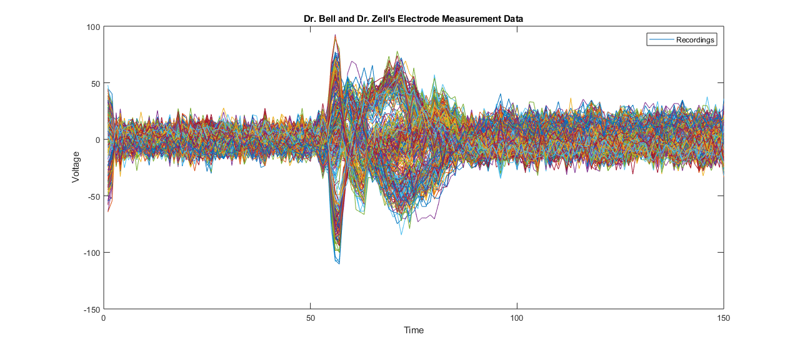
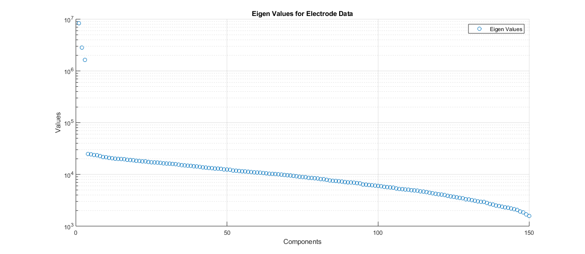
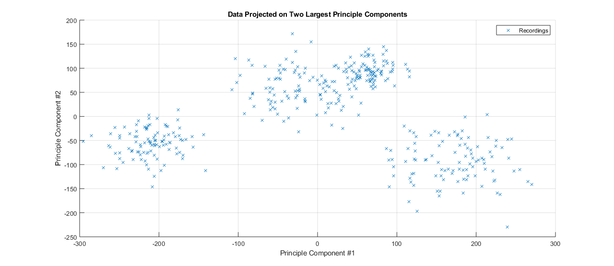
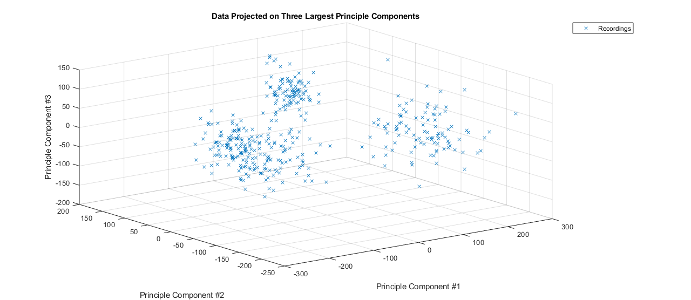

Contents
Homework2 - Question 4 - Matthew DeVerna
Load File
load('windowedSpikes.mat')
(A) Plot the waveforms superimposed
figure
plot(data')
xlabel('Time')
ylabel('Voltage')
legend('Recordings')
title('Dr. Bell and Dr. Zell''s Electrode Measurement Data')

(B) Plot the Eigen Values in Descending Order
[U,S,V] = svd(data) ;
eig_vals = (diag(S)).^2 ;
semilogy(eig_vals, 'o')
xlabel('Components')
ylabel('Values')
title('Eigen Values for Electrode Data')
legend('Eigen Values')
grid on
box off

(C) Project onto the top two princple components
eigen_vectors = V' ;
PC_1 = eigen_vectors(1,:) ;
PC_2 = eigen_vectors(2,:) ;
PC_3 = eigen_vectors(3,:) ;
X = data * PC_1' ;
Y = data * PC_2' ;
Z = data * PC_3' ;
x_zeros = zeros(400,1) ;
plot(X,Y, 'x')
title('Data Projected on Two Largest Principle Components')
xlabel('Principle Component #1')
ylabel('Principle Component #2')
legend('Recordings')
grid on
box off

(D) Project onto the top three principle components
plot3(X,Y,Z, 'x')
rotate3d on
title('Data Projected on Three Largest Principle Components')
xlabel('Principle Component #1')
ylabel('Principle Component #2')
zlabel('Principle Component #3')
legend('Recordings')
grid on
box off
